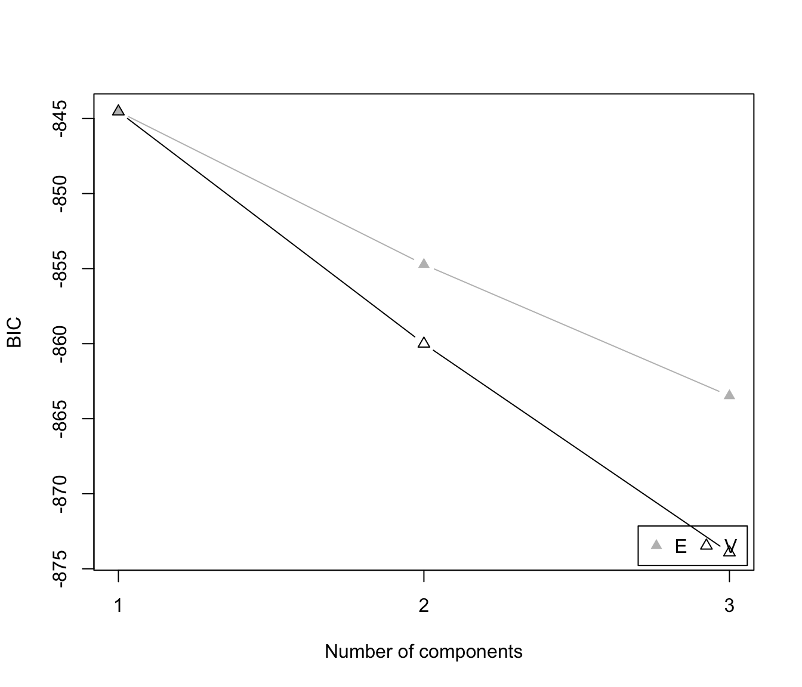
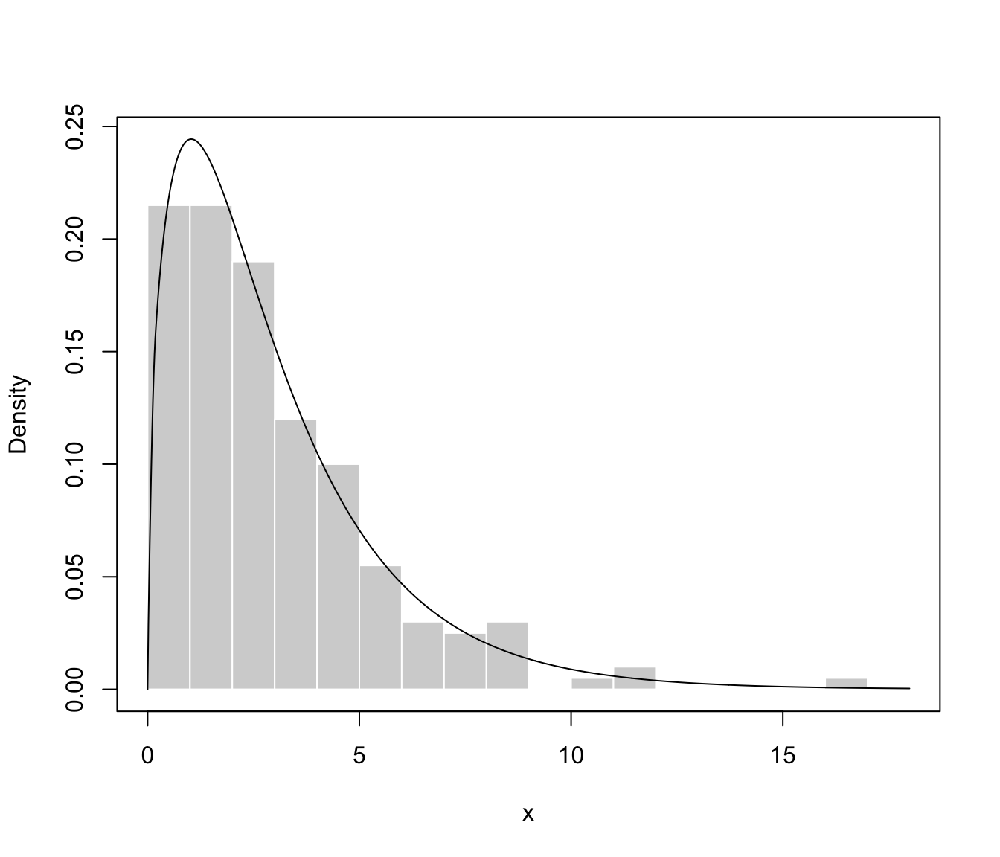
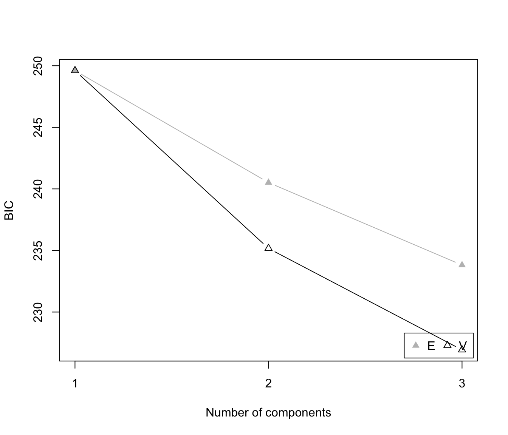
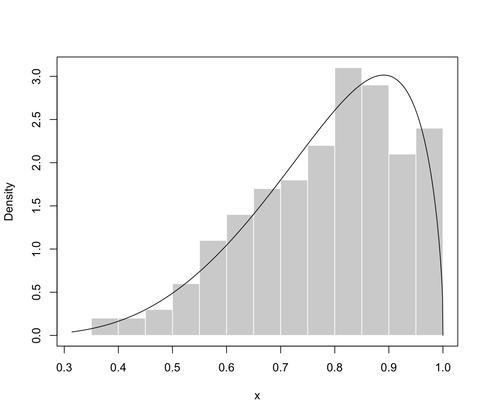
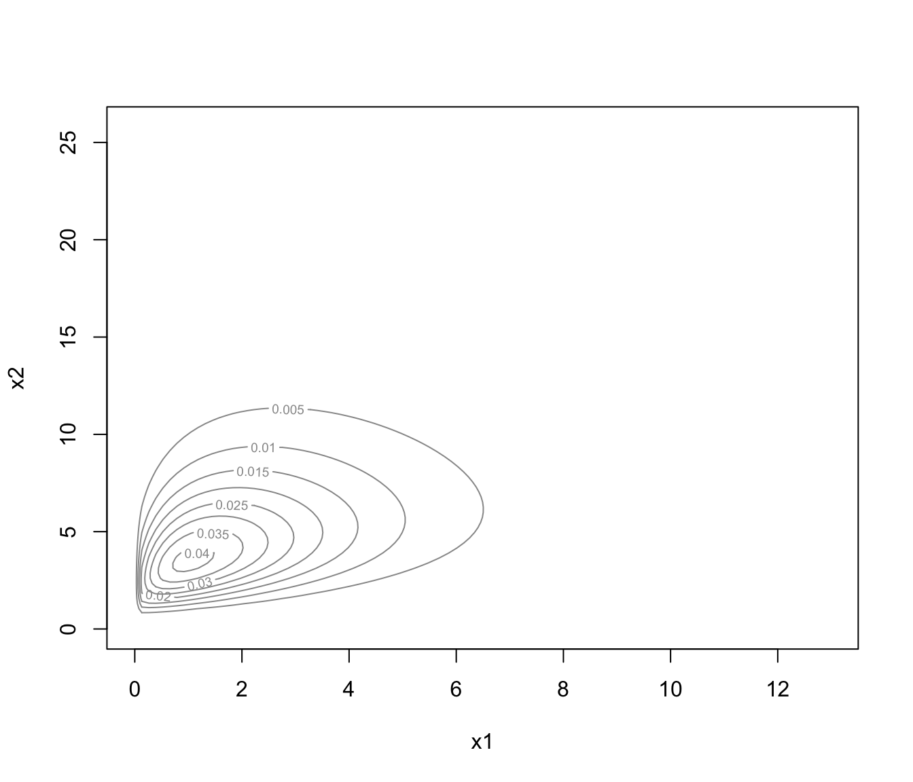
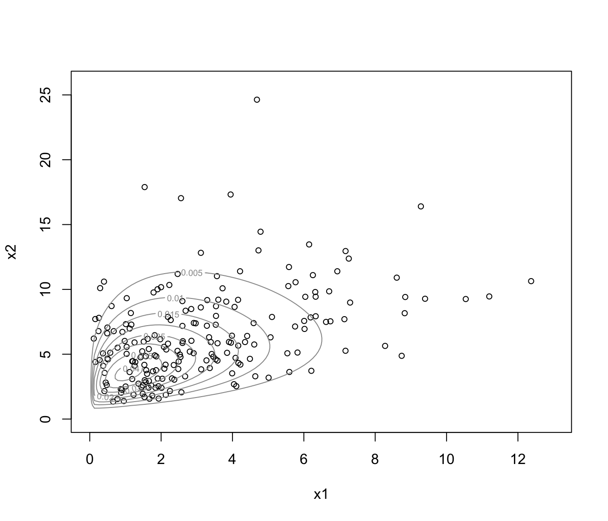
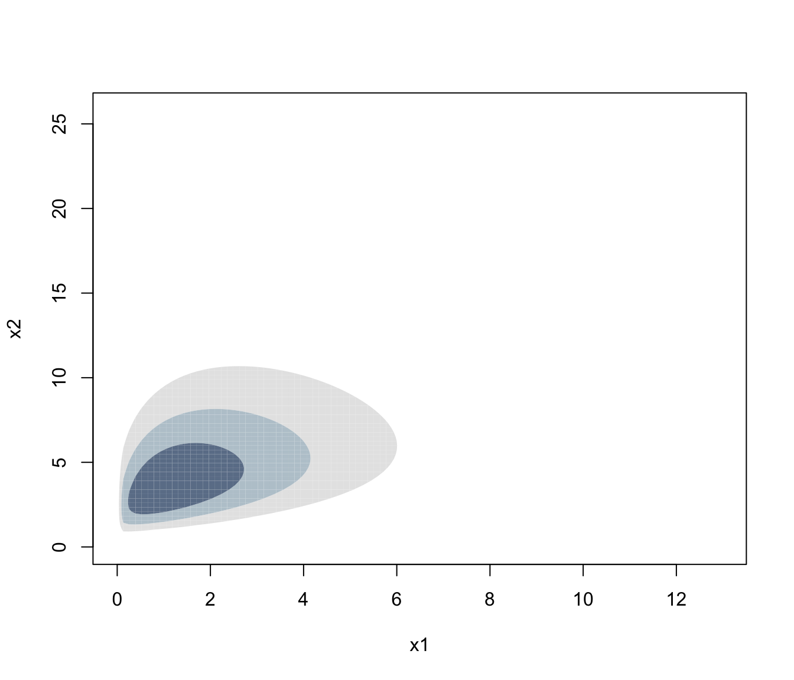
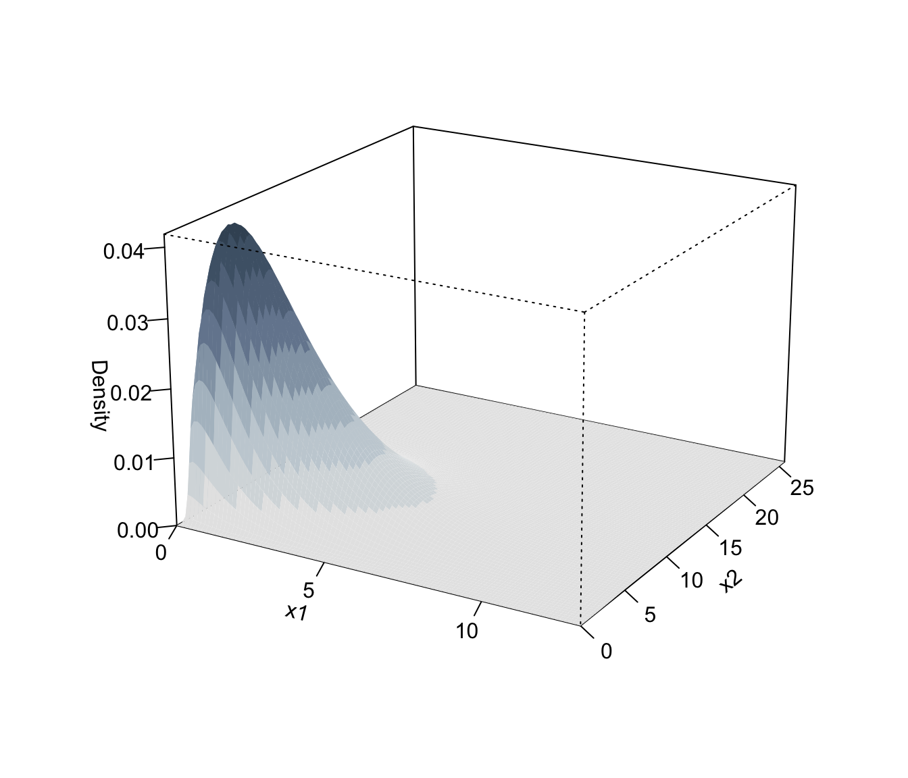

plot.densityMclustBounded.RdPlots for mclustDensityBounded objects.
An object of class "densityMclustBounded" obtained from a call to densityMclustBounded.
The type of graph requested:
"BIC" =a plot of BIC values for the estimated models versus the number of components.
"density" =a plot of estimated density; if data is also provided the density is plotted over data points.
"diagnostic" =diagnostic plots (only available for the one-dimensional case).
Optional data points.
Further available arguments.
For 1-dimensional data:
hist.col = "lightgrey", hist.border = "white", breaks = "Sturges"
For 2-dimensional data:
type = c("contour", "hdr", "image", "persp") transformation = c("none", "log", "sqrt") grid = 100, nlevels = 11, levels = NULL prob = c(0.25, 0.5, 0.75) col = grey(0.6), color.palette = blue2grey.colors points.col = 1, points.cex = 0.8, points.pch = 1
For \(d > 2\)-dimensional data:
type = c("contour", "hdr"), gap = 0.2 grid = 100, nlevels = 11, levels = NULL prob = c(0.25, 0.5, 0.75) col = grey(0.6), color.palette = blue2grey.colors points.col = 1, points.cex = 0.8, points.pch = 1
No return value, called for side effects.
Scrucca L. (2019) A transformation-based approach to Gaussian mixture density estimation for bounded data. Biometrical Journal, 61:4, 873–888. https://doi.org/10.1002/bimj.201800174
# \donttest{
# univariate case with lower bound
x <- rchisq(200, 3)
dens <- densityMclustBounded(x, lbound = 0)
plot(dens, what = "BIC")

plot(dens, what = "density", data = x, breaks = 15)

# univariate case with lower & upper bound
x <- rbeta(200, 5, 1.5)
dens <- densityMclustBounded(x, lbound = 0, ubound = 1)
plot(dens, what = "BIC")

plot(dens, what = "density", data = x, breaks = 9)

# bivariate case with lower bounds
x1 <- rchisq(200, 3)
x2 <- 0.5*x1 + sqrt(1-0.5^2)*rchisq(200, 5)
x <- cbind(x1, x2)
dens <- densityMclustBounded(x, lbound = c(0,0))
plot(dens, what = "density")

plot(dens, what = "density", data = x)

plot(dens, what = "density", type = "hdr")

plot(dens, what = "density", type = "persp")

# }